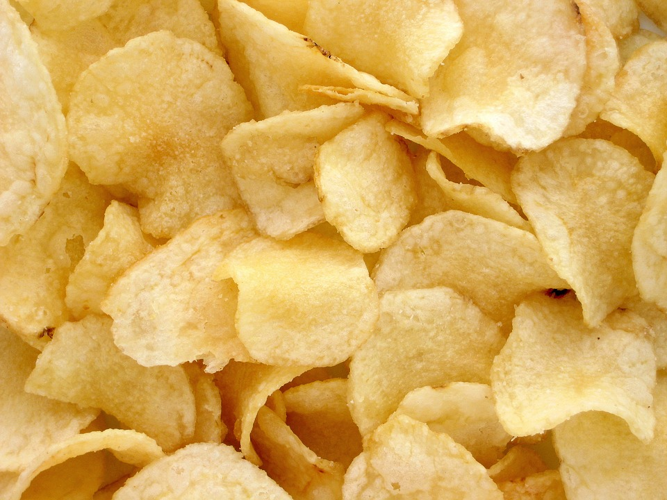
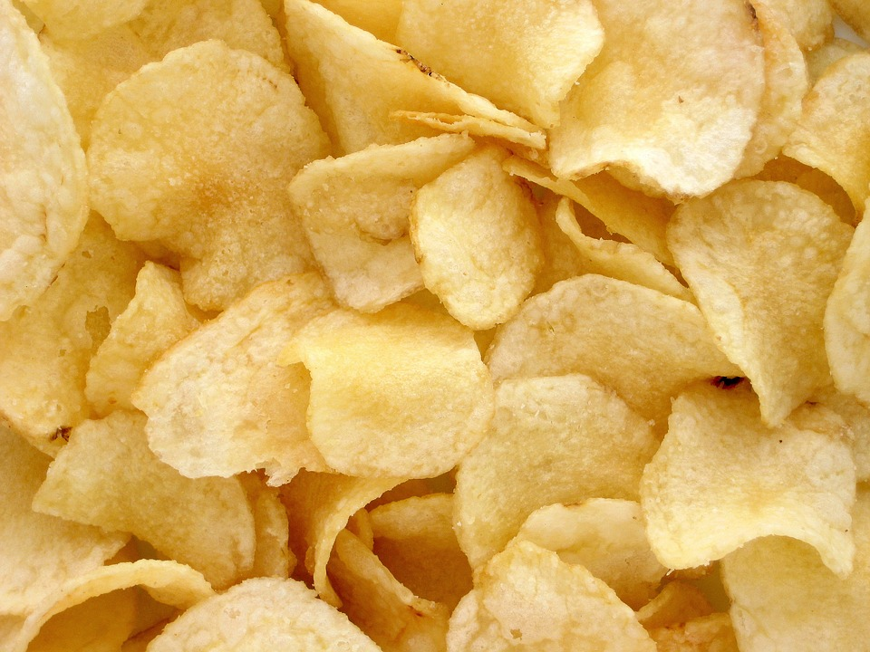

Why Salt and Vinegar?
Salt and vinegar chips are hit or miss to most fans. If you like to have a few tears or you love the smell of vinegar
Salt and vinegar chips are hit or miss to most fans. If you like to have a few tears or you love the smell of vinegar
This Salt and Vinegar Tier list is made to show what salt and vinegar chips fit the given criteria for gamers.
What is a tier list? Well a tier list is a way to distinguish the ranking of the chosen item with assigned school grades, usually in association with video games. With as to why, tier lists although rank the subject matter they associate their grading system with the amount of pros and cons the item has. In this case the brand will have its pros and cons evaluated with the mentioned criteira and shown in relation to its overall pros and cons.